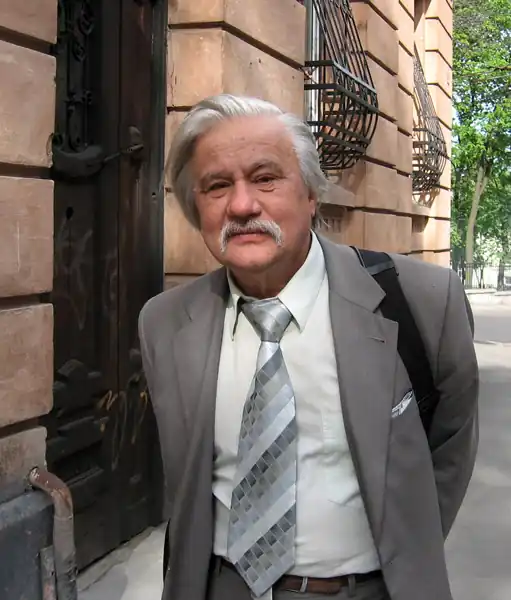

(нар. 09.07.1939, м. Ходорів Львівської обл., помер 28.06.2025)
Видатний поет, один із натхненників і активних учасників руху шістдесятників. Автор самвидаву.
К. виріс у віруючій родині, де ретельно зберігалися українські національні традиції. У дитинстві був свідком масових репресій комуністичного режиму в Західній Україні. Зі шкільних років читав заборонених українських письменників. Його світогляд виявився несумісним з офіційною ідеологією. Роздвоєння, за якого доводилося мати одне обличчя для родини і близьких друзів, а інше — для школи, університету і т.ін., долалося в поетичній творчості. Після закінчення філологічного факультету Львівського університету в 1961 К. працював в обласному архіві аж до арешту 1972. Перша збірка віршів "Екскурсія", присвячена історії, мистецтву й архітектурі Львова, готувалася до друку у видавництві "Молодь". Вона зібрала найкращі рецензії відомих критиків, але так і не побачила світу: набір був розсипаний. З 1965 К. і його дружина Ірина СТАСІВ-КАЛИНЕЦЬ були під наглядом КДБ. На початку 1966 в Києві вийшла перша й остання в СРСР збірка К. "Вогонь Купала" — схоже, через недогляд властей. Можливо, це й урятувало його того разу від арешту. Книжку було заборонено продавати в Західній Україні, автор був викликаний до обкому КПУ для пояснень щодо низки підозрілих місць. Відмова прийняти до Спілки письменників і вилучення з тематичного плану видавництва наступної збірки віршів "Вiдчинення вертепу" засвідчили, що К. не можна публікувати вірші в Україні. Поет посилив розповсюдження власних творів у самвидаві, саморобні книжечки пішли по руках. Крім того, К. часто читав вірші на неофіційних зустрічах у приватних помешканнях, де бувало 10 — 20 і більше осіб. Таких зустрічей було дуже багато. Скоро збірка "Вiдчинення вертепу" вийшла друком у Бельгії. Наступна збірка, "Пiдсумовуючи мовчання", присвячена опальному Валентинові МОРОЗУ, була видана в Мюнхені 1971. У дім К. починають приїздити гості з Заходу. К. і його дружина беруть участь у громадянських і правозахисних акціях: підписують заяви і протести проти сваволі властей, неофіційно, без дозволу виступають на громадських заходах. КДБ все активніше підслуховує, слідкує, обшукує. У січні 1972, в період масових арештів в Україні, була заарештована дружина К. — Ірина СТАСІВ-КАЛИНЕЦЬ. К. став поводитися все більш викликаюче, демонструючи властям готовність до кінця захищати права незаконно заарештованих, особливо своєї дружини. 11.08.72 заарештовано й К. КДБ намагався схилити його до співпраці або прилюдного каяття, пообіцявши за це звільнити дружину і дати спокій йому ("Тоді маленька Звенислава мала б батьків дома, а не десь по таборах"). На суді К. інкримінували видання книг за кордоном, присвячення збірки В.МОРОЗОВІ, контакти з неблагонадійними людьми та іноземцями. Суд скористався також літературознавчою експертизою п'ятьох збірок К., проведеною на замовлення КДБ низкою радянських літераторів. Вирок: 6 р. таборів і 3 р. заслання за ст. 62 ч. 1 КК УРСР ("антирядянська агітація і пропаганда"). Карався спочатку в 35-му таборі, ст. Всехсвятська Пермської обл., де працював токарем, потім був переведений у 36-й табір, сел. Кучино, де "набивав якимось шкідливим піском трубки для прасок". Брав активну участь у табірному русі опору: складання й підписання заяв і листів, голодівки, створення хронік 35-го і 36-го таборів. Коли на побачення з К. приїхала на Урал мати з його маленькою донькою, а його не дозволили, К. оголосив тривалу голодівку. Його підтримали інші в'язні. Тим часом у Нью-Йорку 1972 і 1975 вийшли книги К. 1975. Перебуваючи в таборі, К. став членом Міжнародного ПЕН-клубу, 1977 — лауреатом премії імени І.Франка (Чикаго). Заслання К. відбував разом з дружиною в Читинській області, працював у колгоспі кочегаром на фермі. Вірші, написані до арешту, увійшли до виданого у Варшаві 1991 тому "Пробуджена муза". Написані в таборах та в засланні склали виданий у Канаді того ж 1991 том "Невольнича муза". У неволі К. написав не менше віршів, ніж за всі роки до арешту. Пізніше К. казав, що в таборі він і його товариші "були вільні, духовно вільні. Ми скинули маску, яку носили там, у тому суспільстві, до арешту". Повернувся до Львова 1981, потрапив у гнітючу атмосферу початку 80-х років. "Звичайно, це була свобода, було звичайне життя, — згадував К.,— але не було того натхнення, того напруження, тієї боротьби, які були до 1972 року і в таборі... Тобто я мусив сидіти тихо, якщо не хотів сісти вдруге. А сісти вдруге я не дуже хотів... Після 1981 року я замовк як поет". У Львові тільки за "протекцією" КДБ зміг улаштуватися на роботу бібліотекарем спочатку в одній з районних бібліотек, а з 1983 до 1990 працював у Науковій бібліотеці АН України. З 1987 К. починає відігравати провідну роль у пробудженні вільного культурного і громадського життя Львова. Він і його дружина І.СТАСІВ-КАЛИНЕЦЬ організовують масові акції пам'яти забороненого за комуністичного режиму видатного поета Богдана-Ігоря Антонича, а також памяти композитора Василя Барвінського, в'язня сталінських таборів. Бере участь у виданні неофіційного культурологічного журнала "Євшан-зілля", у створенні Товариства української мови імени Т.Шевченка, в організації панахиди на могилах жертв, закатованих НКВДС у Львівській в'язниці в червні 1941. У 1988 власті ще сподівалися залякуваннями і репресіями зупинити процес демократизації: К. і його дружина були разом із багатьма затримані й засуджені до грошового штрафу. 1990 К. обраний депутатом Львівської обласної ради. 1991 в інтерв'ю журналові "Україна" К. висловив свій погляд на перспективи України: "Нема таких сил у народі, з якими можна було б вимостити для України велику дорогу... Демократичні процеси на Україні? Бачу купку ідеалістів, не впевнений, що їм удасться що-небудь зробити... Може, покоління тих маленьких дітей, якщо ми зуміємо виховати їх повновартими, чесними, не роздвоєними, може, вони цю Україну зроблять поряднішою, не примарною". 1991 в Києві видана збірка К. "Тринадцять алогій", яка була відзначена Державною премією ім. Т.Г.Шевченка. Тоді ж він став лауреатом премії імени Василя СТУСА. З тих пір в Україні вийшло ще декілька збірок К. Його твори перекладені практично всіма європейськими мовами. Великі збірки вийшли англійською, французькою, німецькою мовами. 1997 в Харкові видано в серії "Українська література ХХ століття" практично повну збірку віршів К., а у Франції — великий том віршів французькою. З 1992 К. працює в Міжнародному центрі освіти, науки й культури (м.Львів) завідувачем відділу культури. Пише казки для дітей. Видає 8-томник творів Ірини СТАСІВ-КАЛИНЕЦЬ